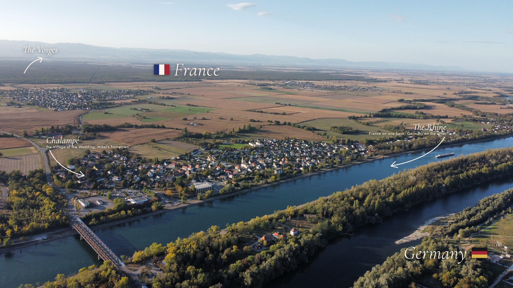
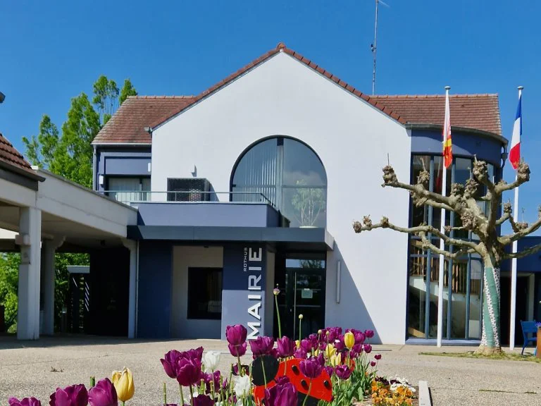
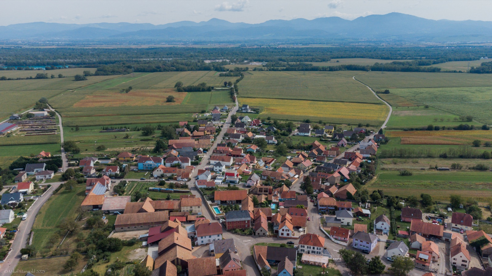
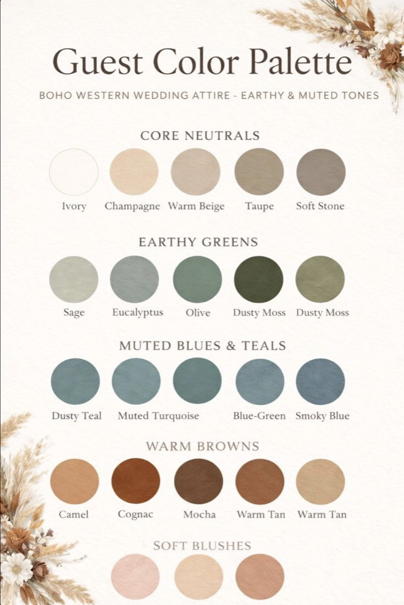

The day
Saturday, 5 September 2026
15h00Civil ceremony · Mairie de Chalampé
17h00Vin d'honneur · “l'apéro”
Dinnerright after, at the same place

Our civil wedding · Chalampé, Alsace
Mikel's hometown, and the village of our civil wedding. A small riverside village on the banks of the Rhine, where France meets Germany. We'll marry at the town hall on Saturday, 5 September 2026, then gather for the evening. Here's everything you need to join us.
Saturday, 5 September 2026

Mariage civil · Mairie de Chalampé
9 Espace Centre-Village
68490 Chalampé, France
Saturday 5 September, 15h00
From 17h00, under a marquee, followed by dinner.
In the French tradition, the vin d'honneur (or apéro) is a relaxed round of drinks and snacks for a wider circle of family and friends - after which our closest people stay on for dinner.
57 avenue de la Paix
68490 Chalampé, France
A short hop from the town hall.
On the Rhine in Alsace, right on the French–German border.
However you arrive, our honest advice is to rent a car.
The closest airport is EuroAirport Basel–Mulhouse–Freiburg (BSL / MLH), about 40 min by car from Chalampé.
Also within reach: Strasbourg (SXB) ~1h20 and Zürich (ZRH) ~1h15 by car.
Closest stations, in order of preference:
1 · Freiburg, then Müllheim - best option: take a train to Freiburg (im Breisgau), then change for Müllheim (im Markgräflerland), the closest station to Chalampé (a short drive away).
2 · Mulhouse, France - TGV hub (Paris, Strasbourg, Basel), ~15 min by car.
3 · Basel, Switzerland - well connected internationally, ~40 min by car.
Chalampé sits right on the Rhine - the German town of Neuenburg am Rhein is just across the bridge.
Roughly 15 min from Mulhouse and 40 min from Basel / the EuroAirport.
However you arrive - plane, train or car - our honest advice is to rent a car. It's by far the easiest way to reach Chalampé, and it lets you explore Alsace, the Black Forest and the Swiss border over a few days. Well worth it.
You can pick one up in Freiburg, right at the EuroAirport (Basel–Mulhouse), or in Basel or Mulhouse - with the usual companies like Sixt, Europcar and Enterprise.
Two options, depending on whether you'll have a car.
Neuenburg am Rhein (Germany) - just across the Rhine bridge from Chalampé.
If you're not renting a car, this is the best choice: we'll pick you up by car for the celebration, and it's where Monse's family will be based, so you'll be in good company.
From Neuenburg to the venue (57 avenue de la Paix) it's about 5 minutes by car, or roughly a 45-minute walk (3 km) across the Rhine bridge.
Prefer the French side? Stay in one of the villages right around Chalampé - Chalampé, Ottmarsheim or Rumersheim-le-Haut. Lovely and close, but you'll need a car to get around.
Browse gîtes and rooms in the area on Gîtes de France or Booking.com →

Find a gîte or a room
Gîtes de France · Alsace ↗ Booking.com · Rumersheim & around ↗Chalampé · Ottmarsheim · Rumersheim-le-Haut
Formal attire, please - with one fun twist: pick any shade from our guest colour palette. Earthy, muted, boho-western tones - ivory, champagne, sage, dusty teal, warm browns and soft blushes are all welcome.

The big wedding - with all the fancy details - will be in Mexico, in April 2027.
Here in France, we're organising it ourselves to celebrate the civil ceremony: no DJ, just a couple of tables and a little decoration at Mikel's parents' home, with food lovingly prepared by his father for around 50–60 of us.
Monse is putting the music together, and we'll dance - there's no real dance floor, so we'll just have to make one!
Expect a warm mix: Monse's family from Mexico, Mikel's German and French family, and the local friends he grew up with. Relaxed, warm and homemade - come as you are.
Message us any time · we're happy to help you plan.
+49 157 80586586 (WhatsApp preferred)
This corner of Europe is spectacular - if you're coming a few days early or staying on, here are some ideas.
Storybook villages, vineyards and tastings along one of France's prettiest drives - right on our doorstep.
Switzerland's art city on the Rhine - museums, medieval old town, and summer Rhine swimming. About 40 min away.
The jaw-dropping Swiss valley of 72 waterfalls, deep in the Alps. A longer trip, but unforgettable.
Hike the highest peak of the Vosges, with sweeping views over Alsace and the Black Forest.
A sunny, canal-laced university town on the edge of the Black Forest, just across the German border.
Unwind in the Black Forest's thermal spas - the perfect reward after the celebration.
Deep forests, lakes and trails right across the Rhine in Germany.